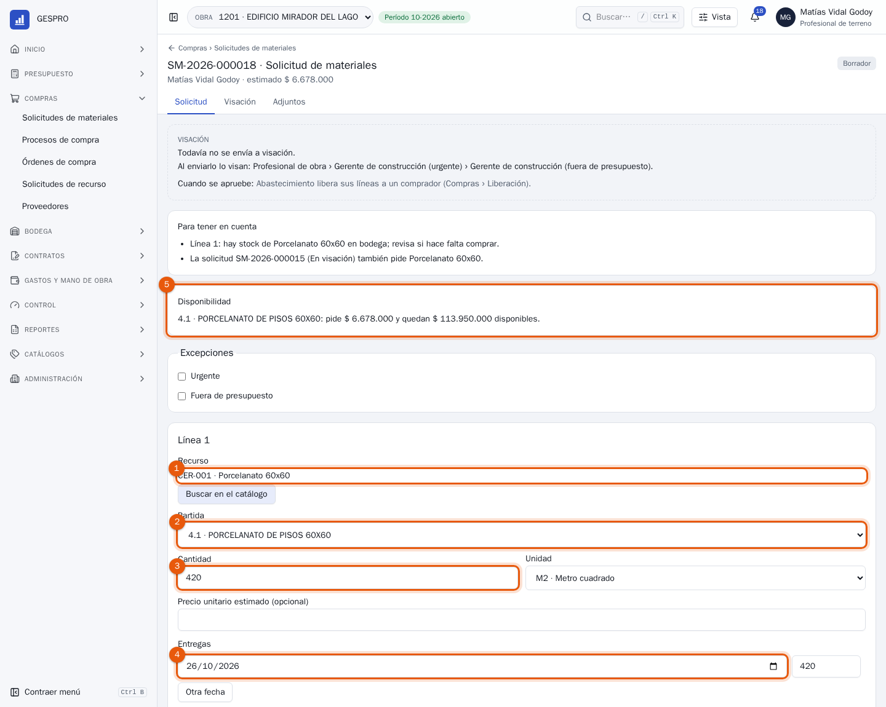
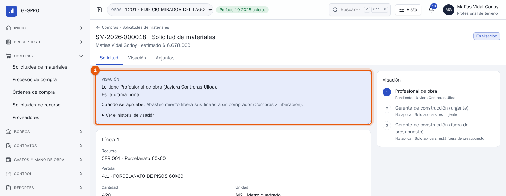
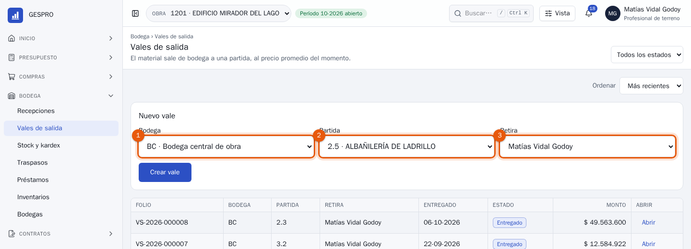
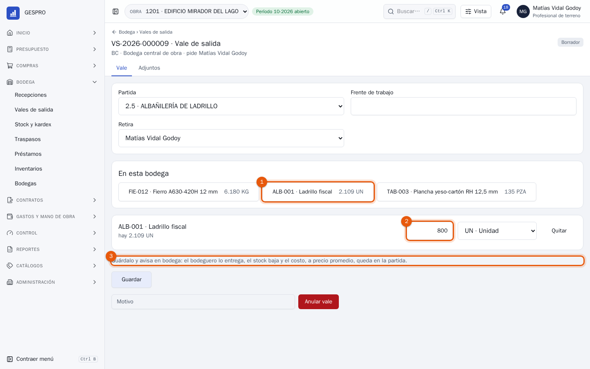
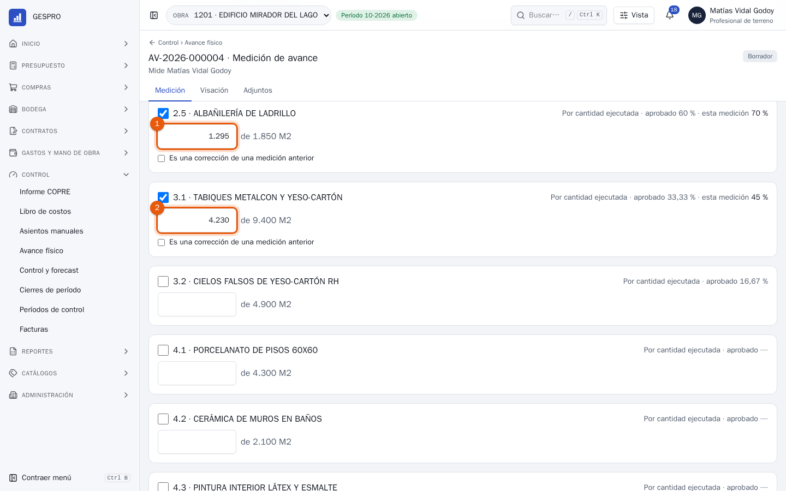
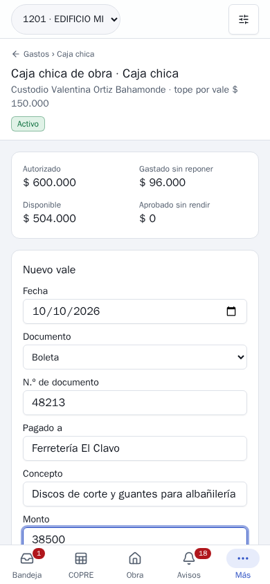
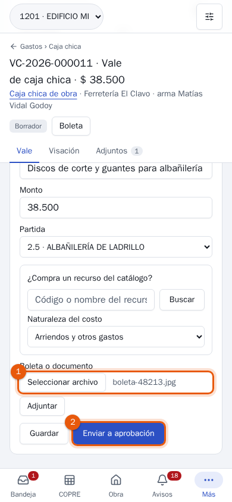
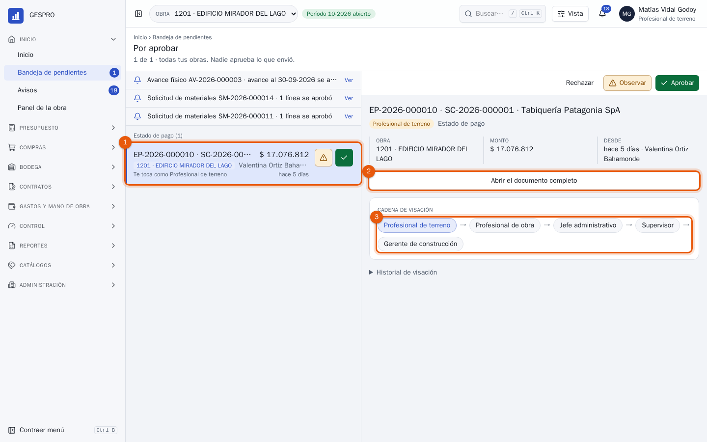
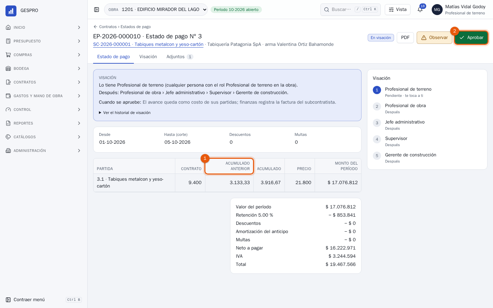

Manual de usuario
Profesional de terreno en GESPRO
Para el ingeniero o profesional de terreno: pedir los materiales que la obra necesita, retirarlos de bodega para cada partida, medir lo que se construyó y dar la primera firma a lo que cobran los subcontratistas.
- Rol en GESPRO
- Profesional de terreno
- Sus pantallas
- Inicio · Solicitudes de materiales · Vales de salida · Avance físico · Caja chica · Bandeja
- Ejemplos con
- Matías Vidal · obra 1201 Edificio Mirador del Lago
1Lo que hace terreno
Terreno es quien sabe qué falta y qué se hizo. En GESPRO eso se escribe en cuatro documentos: la solicitud de materiales, el vale de salida de bodega, la medición de avance y el vale de caja chica. Además, revisa en primer lugar lo que cobra cada subcontratista. Los pasos destacados son los de este manual.
- Pedir materialesQué, para qué partida y cuándo.
- VisaciónEl profesional de obra aprueba la solicitud.
- CompraAbastecimiento cotiza y emite la orden.
- RecepciónBodega recibe contra la orden.
- Retirar de bodegaEl material sale a su partida con un vale.
- Medir el avanceCuánto se construyó de cada partida.
- Primera firmaLo que cobra cada subcontratista.
| Quién | Qué hace con lo de terreno |
|---|---|
| Profesional de obra | Aprueba las solicitudes y las mediciones de avance, y firma después de terreno los estados de pago. |
| Bodega | Entrega el material de los vales y recibe lo que se compró. |
| Jefe administrativo | Aprueba los vales de caja chica; el custodio paga y rinde. |
| Abastecimiento | Convierte las solicitudes aprobadas en órdenes de compra. |
2El inicio
Al entrar, el inicio dice qué te toca hoy y en qué va lo que enviaste.

- La bandeja cuenta lo que espera tu firma.
- Lo que enviaste y sigue en visación, con quién lo tiene ahora. No hace falta llamar para saber en qué va una solicitud.
- Para empezar: los accesos a lo que haces todos los días: pedir materiales, la caja chica, medir el avance y el Informe COPRE.
3Pedir materiales
En Compras › Solicitudes de materiales, Nueva solicitud abre una solicitud en borrador. Cada línea es un recurso del catálogo, la partida a la que va y cuándo tiene que estar en la obra.

- El recurso. Buscar en el catálogo lo encuentra por código o nombre. Si no existe, se pide como recurso por crear y abastecimiento lo da de alta.
- La partida del presupuesto a la que se va a cargar.
- La cantidad, en la unidad del recurso o en otra que el catálogo conozca.
- Las entregas: la fecha en que se necesita. Otra fecha parte la cantidad en varias entregas.
- La disponibilidad de la partida: cuánto pides y cuánto queda en su presupuesto. Si no alcanza, la solicitud lo dice antes de enviarla.
Para tener en cuentaArriba, GESPRO avisa si ya hay stock del recurso en bodega o si otra solicitud en curso pide lo mismo. Revísalo antes de enviar: lo que ya está en bodega se retira con un vale, no se vuelve a comprar.

- Enviada: la tiene el profesional de obra. Si la marcas urgente o fuera de presupuesto, firma además el gerente de construcción; si no, esos pasos aparecen tachados. Al aprobarse, abastecimiento la recibe para comprar.
4Retirar de bodega
Lo que ya está en bodega sale con un vale de salida, a una partida. Lo arma terreno y lo entrega el bodeguero; recién entregado se vuelve costo de la partida, al precio promedio de la bodega.

- La bodega de la que sale.
- La partida a la que va el material.
- Quién retira. Crear vale lo abre en borrador.

- En esta bodega: lo que hay, con su saldo. Tocar un recurso lo agrega al vale.
- La cantidad que sale, en la unidad que se elija.
- Lo que sigue. Guardar lo deja listo y se avisa en bodega: el bodeguero lo entrega. El vale no muestra monto hasta entonces, porque el costo se calcula al entregar.
Al entregarlo, el vale queda con su PDF y el material pasa como costo a la partida. Si sobra, se devuelve desde el mismo vale y vuelve a la bodega al valor con que salió.
5Medir el avance
En Control › Avance físico, Nueva medición abre la medición del mes con todas las partidas de la obra. Solo se completa lo que se midió.

- Lo ejecutado de la partida, acumulado desde el inicio de la obra y en su unidad: 1.295 de 1.850 m². A la derecha, lo aprobado hasta ahora (60 %) y lo que dice esta medición (70 %).
- Otra partida medida. Las que no se tocan quedan como estaban.
Enviar al profesional de obra la manda a visar. Aprobada, alimenta el valor ganado del control y el forecast: por eso se mide lo construido, no lo pagado. Si una medición anterior quedó alta, se marca Es una corrección de una medición anterior y se explica.
6Caja chica desde el teléfono
Una compra menor pagada en el momento se rinde con un vale de caja chica, con la foto de la boleta. Se hace desde el teléfono, en la misma obra.


Un vale no puede pasar el tope por vale del fondo. Aprobado, entra a la próxima rendición de la caja chica.
7La primera firma de un estado de pago
Cada mes el subcontratista cobra lo que avanzó. Terreno firma primero porque es quien vio el trabajo: revisa que las cantidades sean las que están construidas.

- El estado de pago que espera tu firma, con su monto. Tocarlo muestra el resumen a la derecha.
- Abrir el documento completo para ver las cantidades antes de firmar. Desde la lista también se puede aprobar, pero un estado de pago se revisa entero.
- La cadena de visación: quién firma después de ti. Profesional de obra, jefe administrativo, supervisor y gerente de construcción.

- Acumulado anterior y acumulado: lo cobrado hasta el estado de pago anterior y lo que se cobra hasta este corte. La diferencia es lo que avanzó en el período, y tiene que calzar con lo que se ve en la obra.
- Aprobar lo pasa al profesional de obra. Si una cantidad no corresponde, Observar lo devuelve con el motivo escrito; quien lo armó lo corrige y la cadena vuelve a empezar.
8Preguntas frecuentes
El recurso que necesito no está en el catálogo.
Pídelo como recurso por crear desde la misma línea de la solicitud, con su descripción. Abastecimiento lo crea y la solicitud sigue con el recurso nuevo.
La partida no tiene disponible para lo que pido.
Marca la solicitud fuera de presupuesto y explica por qué. Pasa con una firma más, la del gerente de construcción.
¿Puedo retirar sin vale y regularizarlo después?
No. El vale es lo que carga el costo a la partida; sin él, la bodega queda con un saldo que no existe y el costo de la partida queda corto.
Medí de más el mes pasado.
En la medición nueva, escribe lo ejecutado real y marca Es una corrección de una medición anterior. El avance puede bajar, y queda escrito por qué.
¿Por qué no veo el botón Aprobar en una solicitud?
Porque la creaste tú: en GESPRO nadie aprueba lo que envió. Las solicitudes las aprueba el profesional de obra.